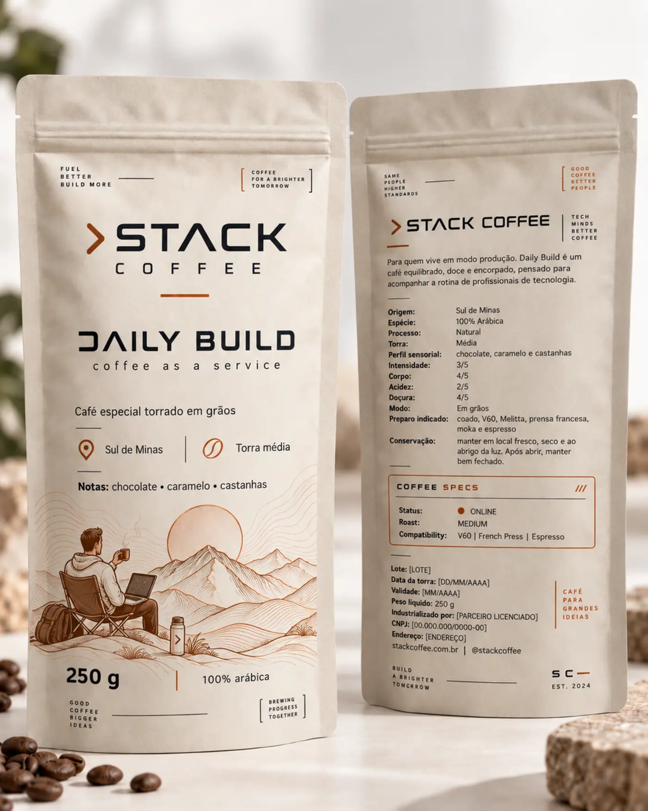

SPECIALTY COFFEE // BRAZIL
Café para
o que vem depois.
Cafés especiais do Sul de Minas para quem vive entre ideias, entregas e novos começos.
$ brew --release daily-build
DAILY
BUILD
O café que acompanha sua rotina sem roubar a cena.
Equilibrado, doce e encorpado. Uma torra média pensada para manter a clareza na primeira xícara e o ritmo até o último commit.
- ORIGEM
- Sul de Minas
- PROCESSO
- Natural
- TORRA
- Média
- NOTAS
- Chocolate, caramelo e castanhas
- FORMATO
- 250 g

PRIMEIRO LOTE$ checkout --channel mercado-livre
DAILY BUILD
Café especial torrado em grãos
Doce, encorpado e fácil de beber. Notas de chocolate, caramelo e castanhas para manter sua stack rodando do primeiro café ao último commit.
Quando as vendas abrirem, pagamento, segurança e entrega serão processados pelo Mercado Livre.
FUEL.
FOCUS.
PROGRESS.
Nem todo progresso acontece em alta velocidade.
A Stack Coffee nasceu para criar uma pausa com propósito: café de origem, torra cuidadosa e um momento para organizar a mente antes do próximo passo.
“Tecnologia move o mundo.
Pessoas escolhem a direção.”
FROM MINAS TO YOUR STACK
Código limpo.
Origem transparente.
Começamos no Sul de Minas, respeitando quem cultiva, seleciona e transforma cada lote. Você recebe um café rastreável, fresco e feito para a rotina real.
04 // PRÓXIMO DEPLOY
O primeiro lote está
compilando.
Acompanhe os bastidores, testes de torra e a abertura das primeiras vendas.
@stackcoffe.oficial ↗